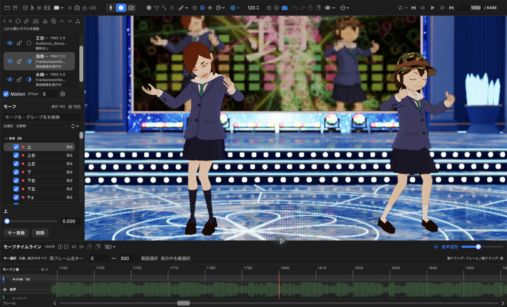
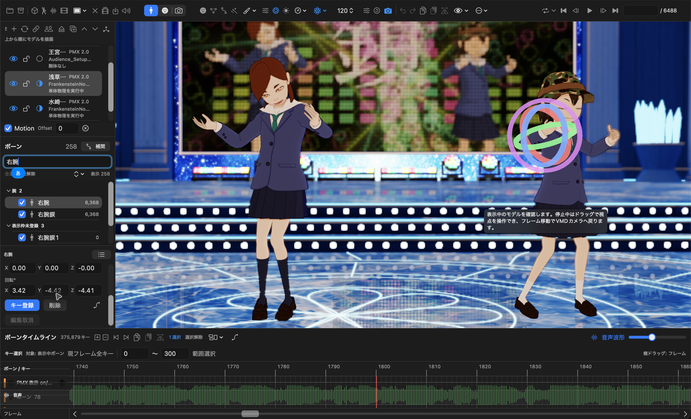
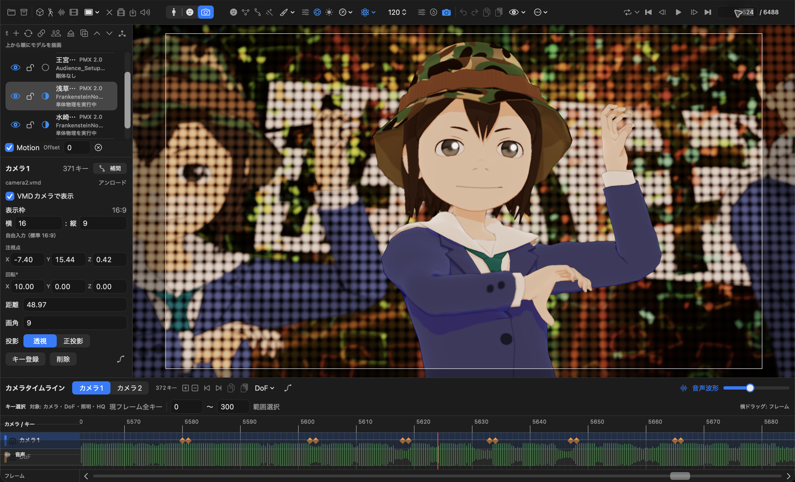
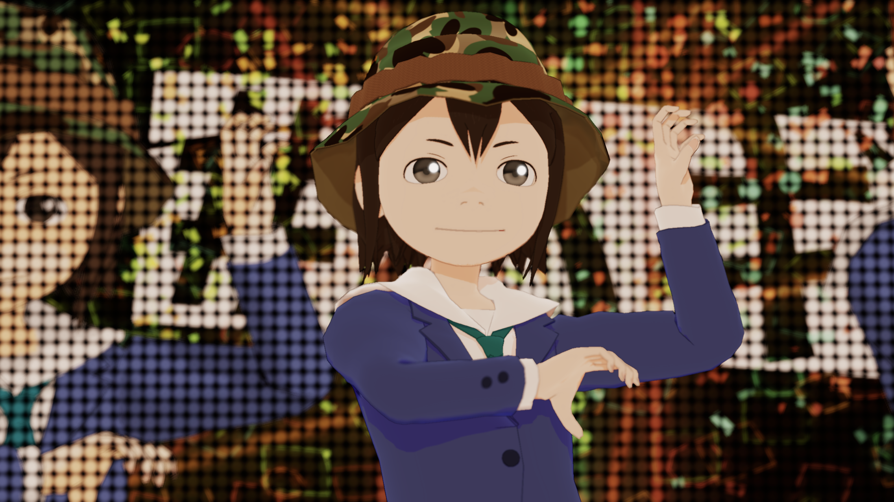
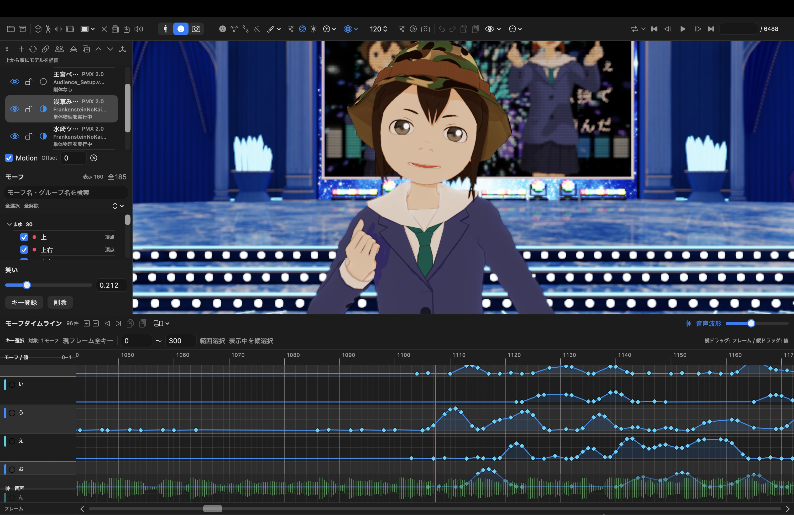

02-overview.png · アプリ全体Frame 1800 · 2886 × 1752 · 場面 02, 04, 07, 10, 11モデル一覧・モーション割当・音声波形。読込後の状態。
03-bone-gizmo.png · 右腕と回転ギズモFrame 1800 · 2886 × 1752 · 場面 03, 05キー登録欄まで表示。ヘルプ吹き出しが残るため本番前に再撮影。姿勢編集・登録は未実施。
05-camera-timeline.png · カメラとタイムラインFrame 5624 · 2886 × 1752 · 場面 06カメラ1、透視投影、既存カメラキーを表示。新規登録は未実施。
06-closeup-dof-on.png · 顔アップ・DoF ONFrame 5624 · 2272 × 1278 · 場面 01, 08, 09HQ・透視投影。DoF OFF比較は未撮影。
07-dof-settings.png · DoF焦点設定Frame 5624 · 1164 × 1696 · 場面 09DoF全体ON、現在フレームの描画条件ON、浅草みどり／左目、F/1.40。焦点キーは未登録。
06-morph-timeline.jpg · モーフ値のタイムライン表示3024 × 1964 · 場面 06横軸はフレーム、縦方向は値0〜1。キーと線でモーフの強さと時間変化を確認。